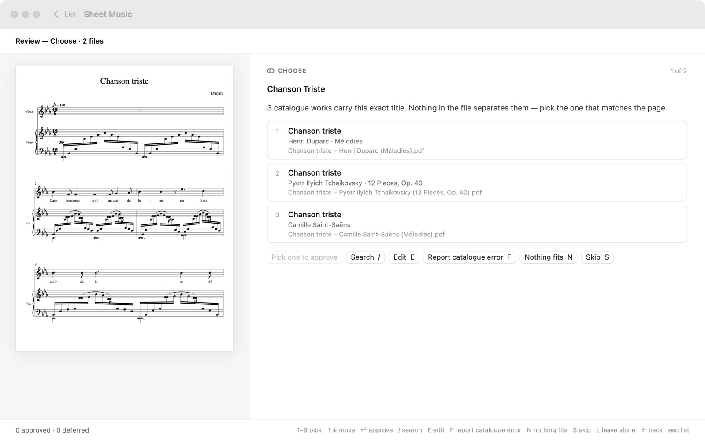

For singers, voice teachers and vocal libraries
Your score library, properly named.
Point Score Sifter at a folder of sheet-music PDFs. It works out what each one is (aria, art song, show tune), names it the way you like, and fills in the details forScore reads. Nothing changes until you approve it.
For Mac · macOS 14 or later · Apple silicon and Intel
To Review
8 files · not looked up yet
Press Auto-lookup to see a messy folder tidied up. In the app, nothing is renamed until you approve it.
Programme
in nine short parts
- I.Your library, as it is nowthe problem
- II.How Score Sifter reads a scorefour steps
- III.Match, Choose, Check, Nothing foundfour answers
- IV.Your notes stay yours[low], [high voice]
- V.Keys belong to your copytransposed scores
- VI.Straight into forScoreone tap
- VII.Safe with your filessix promises
- VIII.Why only Maca note from Derek
- IX.Freethe download
I.
Your library, as it is now
Downloads from IMSLP and music shops. Scans of a teacher’s photocopy. Files a student emailed. The same aria three times, in three keys. Every singer’s library ends up looking something like this.
Score Sifter turns it into a library you can search, sort and trust.
IMSLP-Puccini_Tosca_Recondita_armonia.pdf
Scan_047.pdf
Nessun_dorma-Puccini-Turandot-v2.pdf
widmung schumann HIGH.pdf
206656879-MUSICA-PROIBITA-S-GASTALDON-Op-5-pdf.pdf
Ombra mai fu (2) copy.pdf
II.
How Score Sifter reads a score
1
The filename
It reads what’s there: title, composer, work, key, and the notes you’ve added. It recognises the clutter shops and libraries add, and ignores it.
2
The catalogue
Every file is checked against a catalogue of 54,180 pieces built for singers: art song, opera and operetta, musical theatre, sacred music and folk song. It lives inside the app.
3
The page
When the name says nothing useful, it reads page one of the score, with Apple’s own text recognition. On a Mac with Apple Intelligence it can also suggest a title from the page, privately, on your Mac.
4
You
You see every proposed name first. Approve the ones you’re happy with, then rename. Change your mind later and Undo puts every name back.
When the catalogue doesn’t know a piece, Score Sifter can ask MusicBrainz and Open Opus, sending only the title and composer. You can switch that off. Everything else stays on your Mac.
III.
Match, Choose, Check, Nothing found
The catalogue knows this piece exactly. Approve it with confidence.
More than one genuine candidate. Duparc, Tchaikovsky and Saint-Saëns all wrote a Chanson triste, so you pick.
A likely answer that needs your eye: a near spelling, a title read from the page, a lookup online.
Score Sifter would rather leave a file alone than guess. It keeps its name until you decide.
A wrong name is worse than no name. So Score Sifter only says Match when it is sure.

IV.
Your notes stay yours
Singers mark their files: the lower key, the high-voice edition, the copy for a particular student. Anything Score Sifter doesn’t recognise stays in the new name, and it shows you, so you can keep it or drop it.
V.
Keys belong to your copy
Most singers’ scores aren’t in the original key. So Score Sifter never takes a key from the catalogue. It keeps the key your copy is in, from the filename, and puts it in the new name and inside the PDF.
Widmung Op 25 no 1 - Schumann (F).pdf
Widmung – Robert Schumann (Myrthen, Op. 25, No. 1) – [F].pdf
Written in A flat. Sung, on this copy, in F.
VI.
Straight into forScore
Score Sifter writes the title, composer, key and tags into each PDF. Import the files into forScore, open a score’s details and tap Fetch: it’s all there, ready to sort and search. Whatever the publisher already stored in the file is kept.
VII.
Safe with your files
- Nothing is renamed until you approve it.
- It never writes over another file.
- Undo puts every name back, even after you quit and reopen.
- It only opens the folders you choose.
- Locked and damaged PDFs are renamed, never written into.
- Tested on a library of 10,200 scores. Not one file lost.
VIII.
Why only Mac
Earlier versions of Score Sifter ran on Mac, Windows and Linux. I took them down, because they weren’t good enough.
Score Sifter renames files in your own library. That’s a job where nearly right isn’t good enough, and one person can’t make three versions of an app equally careful. So I chose one, and rebuilt it properly for the Mac.
Built natively, it uses Apple’s own tools for the parts that matter most: reading the page of a score, keeping your files safe while it works, and reading titles with on-device AI, entirely on your Mac. It’s checked by Apple, and it only ever touches the folders you give it.
If you sing from an iPad with forScore, there’s a good chance your library already lives on a Mac. Score Sifter is made for exactly that.
Derek, Kairovo
IX.
Free.
Free, with no account and no subscription. Kairovo’s paid apps are bought once, too.
Leave your email and the download starts straight away. I’ll only write about new versions of Score Sifter and new Kairovo apps. Unsubscribe any time.
Requirements
A Mac with macOS 14 Sonoma or later. Apple silicon and Intel; tested on Apple silicon. Looking pieces up online is optional.
Optional: Apple Intelligence can suggest a title from page one, privately on your Mac. It needs macOS 26 on a Mac with Apple silicon.
Why free
Tidying a library is a one-off job: once, and again when a new folder arrives. There’s nothing to subscribe to. Kairovo’s paid apps for musicians keep the lights on. See the others
Signed by Apple
Version 2.0.0, notarised by Apple: it opens without a warning, and offers its own updates. Read the guide
Questions
Does it work with instrumental music?
It’s built for singers. Instrumental scores can still be renamed from their filenames, but the catalogue is made for vocal music.
Does it need the internet?
No. The catalogue is inside the app. If you allow it, Score Sifter asks MusicBrainz and Open Opus about pieces the catalogue doesn’t know, sending only the title and composer.
Will it change what’s inside my PDFs?
It adds the title, composer, key and tags so forScore can read them, and keeps everything the publisher stored. You can switch this off in Settings.
Is there a Windows version?
Not any more. The reasons are in Why only Mac.
Where do I send a problem or a suggestion?
To hello@kairovo.com. Every message is read.